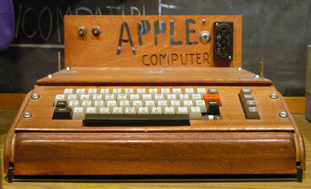

Apple 50 | Apple I
Jobs és Wozniak tudták, hogy az ő párosuk sokkal többre képes, mint csak Blue Boxok árulására. Ezért, 1976 Április 1-én hivatalosan is megalakult az Apple Computers Incorporated. Kezdetben az Apple csak Jobs, Woz, és az egyik barátjuk, Ronald Wayne-ből állt. A munkaköröket így osztották fel:
- Steve Jobs felelt az ötletekért, kreatív víziók megosztásáért, és marketingért. Ő volt a cég arca.
- Steve Wozniak felelt a hardver és szoftveres feladatokért, például az alaplapok, operációs rendszerek megírásáért.
- Ronald Wayne felelt az adminisztratív feladatokért és a dokumentációk megírásáért.
Wozkiakot nehéz volt elcsábítani a HP-től, részben azért, mert Wozniak nagyon szkeptikus volt a cég sikere és stabilitása iránt, mivel az Apple éppen egy háború (Vietnámi Háború) után alapult, és a gazdaság kiszámíthatatlan volt. Wozniak nem akarta feladni az egyetlen stabil munkahelyét, stabil bevétellel, ezért elutasította Jobs teljes munkaidős kérését. Sok győzködés után a végén beleegyezett. Az első termékükként egy korai személyi számítógépet készítettek, az Apple I-et
